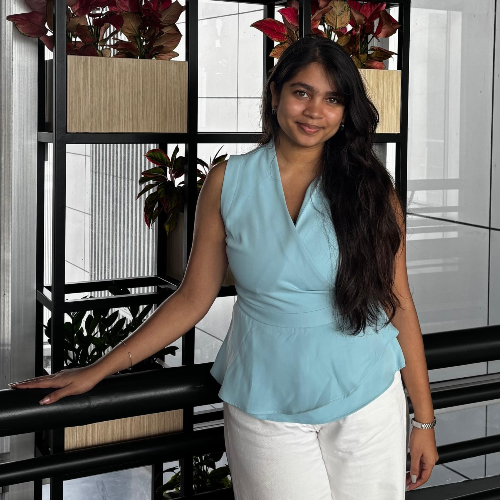
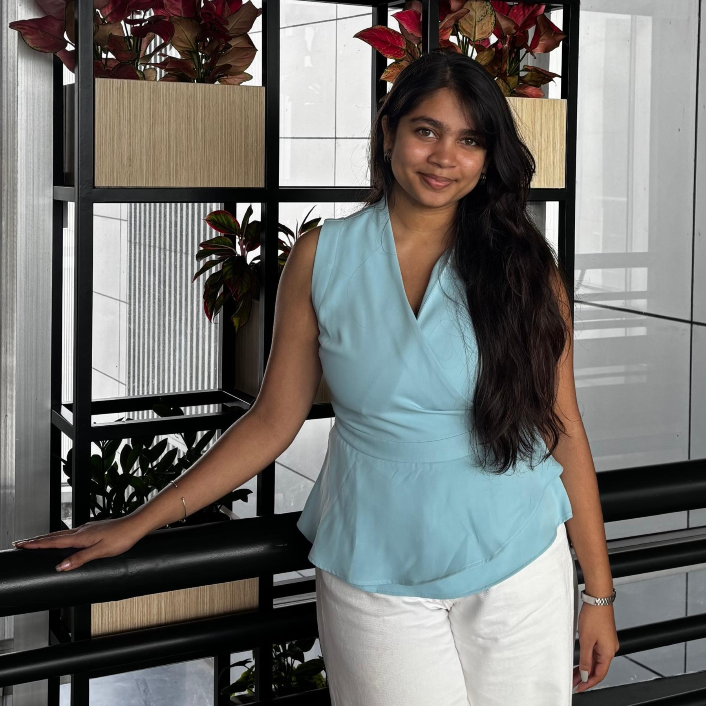

Hello, I'm Priya
I am A Computer Engineering graduate passionate about software development, automation, and data-driven systems. Aspiring MS in Computer Science student. I am currently working as a Quality Specialist at Bank of America, focusing on Test Data Management, where I work with large datasets to support quality assurance and data integrity. Previously, I have interned as a Python Intern at IIT Bombay and as an IT Intern at Indian Railways, gaining experience across both research-oriented and enterprise environments. My technical skill set includes Python, R, SQL, and TensorFlow, along with tools such as JIRA, MSP, and DataX. I am actively exploring AI prompting techniques and have a strong interest in Natural Language Processing, Machine Learning, and Deep Learning, with the goal of applying these skills to real-world, impactful problems.
 

About Me
I completed my Bachelor’s degree in Computer Engineering from Usha Mittal Institute of Technology in 2024. Alongside academics, sports have played a defining role in shaping my discipline, leadership, and teamwork. I began my athletic journey with basketball at the age of 10 and was selected for my school’s U16 team. Later, I transitioned to badminton, winning multiple inter-collegiate awards and representing my university at state-level competitions. After joining Bank of America, I secured two gold medals and one silver medal across three categories within two months. Most recently, I led my team to victory in a women’s cricket tournament, earning the Player of the Tournament and Best Batsman awards.
Projects
Academic and practical projects showcasing my technical and problem-solving skills.
Foodopedia
An online food mart platform enabling users to browse, search, and order food items through a clean and intuitive interface.
College Website Chatbot
An AI-powered chatbot designed to assist students with admissions, courses, and campus-related queries.
Cyber Warriors
An educational game aimed at spreading cyber security awareness through interactive challenges and scenarios.
Experience
My professional journey and internships.
QUALITY SPECIALIST, Bank of America
Hired as Campus Graduate. Working in the Test Data Management (TDM) team to mine, condition, and manage large datasets and automation for manual mass transaction.
PYTHON INTERN, FOSSEE, IIT-B
Certificate Generator website using Django.
IT INTERN, Central Railway Loco Workshop
Hardware maintenance, OS installation, networking support and troubleshooting.
Rail Kaushal Vikas Yojana
Hands-on workshop experience in locomotive maintenance and job fitting.
Education
My academic background and qualifications.
Usha Mittal Institute of Technology
B.Tech in Computer Engineering — CGPA: 8.79/10
Ramnivas Ruia College
HSC (12th) — 72.91%
St. Paul’s Convent High School
SSC (10th) — 87%